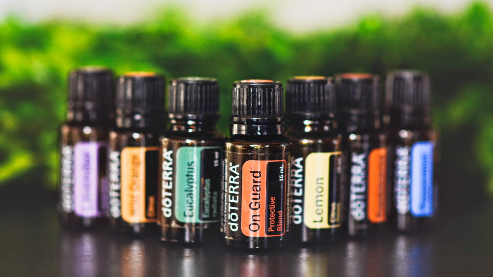

Je partage ici avec vous les huiles essentielles doTERRA : huiles essentielles que j'utilise dans mon quotidien et pour mon travail : les massages et le yoga.
Chaque huile essentielle dōTERRA certifiée de pure qualité thérapeutique (CPTG) est soigneusement extraite par un réseau de producteurs, distillateurs et chimistes compétents pour assurer à l’utilisateur une expérience toujours aussi puissante (les plantes sont récoltées exclusivement sur leurs terres d’origine). Les huiles essentielles mises en bouteille sont 100 % pure, sans pesticide, sans produits de synthèse, sans aucun polluant.
Et cela se sent : l’odeur de ces huiles essentielles n'a rien à voir avec celle que j'achetais avant.
Ce sont des huiles ''équitable'' : « Nous travaillons directement avec les producteurs, il n’y a pas d’intermédiaire et pas de courtiers pour profiter d’eux. L’argent va de notre main à celle du producteur » Emily Wright DoTerra va chercher les plantes et fruits dans leur région d’origine et seulement de petits producteurs qui aiment leur terre et leur métier. Les producteurs sont payés équitablement, et les distributeurs qui mettent les clients en relation avec la société doTerra sont rémunérés équitablement aussi. C’est important pour moi de savoir que l’argent que je donne pour ces huiles sera réparti équitablement, qu’il ira aux bonnes personnes et que ce ne sont pas quelques intermédiaires qui se remplissent les poches.
Les flacons sont pratique :l’étiquette est en plastique et ne s’efface pas avec le temps et l'on peut mettre une petite étiquette sur le capuchon pour pouvoir les repérer facilement. Le compte goutte est rapide : pas besoin de rester 2 min devant votre flacons pour avoir 20 gouttes.
Un flacon d’huile essentielle dure longtemps, car on en utilise moins et moins longtemps pour avoir un effet. Du coup, ça reste financièrement intéressant.
Il y a 2 façons d’acheter des Huiles Essentielles DoTerra (ainsi que leur autres produits), les huiles seront livrées directement chez vous en 3-4 jours.
Tout ce que vous achèterez sera au pris de gros, c’est-à-dire -25% par rapport au prix au détail.
Vous n'avez aucune obligation de faire de DoTerra votre activité professionnelle. Mais si vous voulez faire de DoTerra votre activité professionnelle, vous pouvez !
Cela coûte 20€/an pour avoir droit à cette remise. En étant fidèle à la marque, on cumule des points et on peut avoir des huiles gratuites.
Il n’y a pas de minimum à acheter ou de quotas à remplir chaque mois, vous êtes libres de faire et de commander ce que vous voulez.
Il y a plusieurs Kits d’inscription . Acheter un kit n’est pas une obligation mais je le recommande vivement car c’est vraiment une façon économique de commencer votre aventure avec les huiles.
1. Allez sur cette : page DoTerra
2. Sélectionnez la langue, le pays et Wholesale prices
3. Remplissez vos coordonnées. Les case « Enroller ID » et « sponsor ID » devraient être pré-remplies mais si ce n’est pas le cas, mettez le numéro 4788688
4. Sélectionnez votre fuseau horaire (pour la France GMT+1) et choisissez votre mot de passe pour vos future connexions sur le site.
5. Cochez la case pour accepter les termes et conditions.
6. Sélectionnez votre kit, c’est-à-dire le kit d’inscription que vous avez choisi ou bien, si vous voulez juste un produit, les frais d’inscription de 20€ = Introductory Packet. Vous pouvez aussi achetez d’autres articles lors de cette première commande.
7. Vous recevrez un email de confirmation avec votre ID = identifiant (pensez à noter votre mot de passe) pour pouvoir accéder au site et faire vos achats, changer vos produits sur votre commande mensuelle, etc…
Vous pouvez mettre en place une commande automatique (LRP). Ceci est complètement OPTIONNEL. Le programme de Fidélité Doterra (LRP) fait comptabilise un pourcentage de chacun de vos achats qui sera reversé en points cadeaux pour avoir des huiles gratuites. Ce pourcentage de vos achats augmente avec votre fidélité : de 10% les 3 premiers mois à 30% au bout d’un an. Plus d’info en cliquant ici. Vous pouvez changer vos produits tous les mois, vous avez des réductions spéciales sur certains « kits LRP ». Choisissez votre date de livraison mensuelle.
En tant que client au détail vous aurez les prix au détail. Aucun frais d’inscription pour passer vos commandes.
1. Cliquez pour accéder à la boutique en ligne.
2. Cliquez sur SHOP en haut à droite.
3. Choisissez le pays et la langue.
4. Choisissez vos produits en cliquant sur les images, puis passer commande.